I'm working with a system where a single client within a single instance had multiple company code configured. So some users are assigned a role where the company code authorization is restricted to a single company(let's say AAAA) code in the authority profile(Auth object for company code is F_BKPF_BUK and =AAAA is specified). In this way, that user are only allowed to display the account document of company code AAAA in FB03. However when the user use F4 search help for the company code, it shows all the company code in T001. It's not harmful to be able to see all other companies whether their competitors or not. The problem is that the user can also use F4 to look at the material name and business partner that does not belong to the company code assigned to the user. Therefore, we need to suppress the standard search help to show all the data. Instead we need to replace it with our custom search help, embedded with search help exit that does authority check. In this section, I will demonstrate how to suppress standard material(MARA-MATNR) search help and replace it with my custom search help.
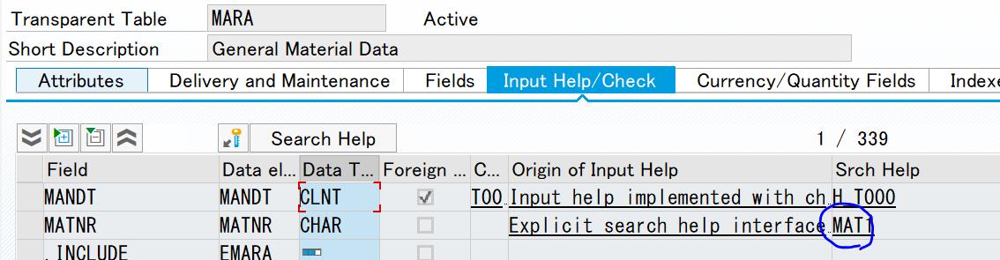 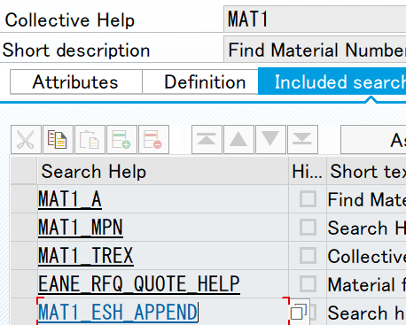MARA-MATNR is using standard search help called MAT1. In SE11, MAT1 is a collective search help and it contains seceral other standard search helps like MAT1_A, MAT1_MPN and MAT1_TREX.
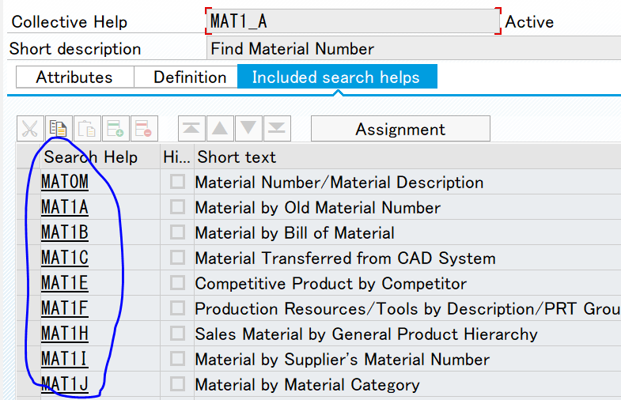 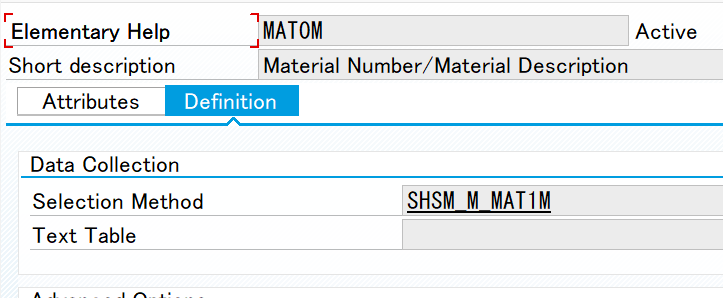If we dig down these search helps, MAT1_A for example, there are many more standard search helps. These are Elementary Help and it's the bottom of the collective search help MAT1_A.
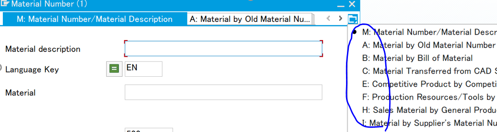If you use F4 to prompt materials search help from MM03, there are massive number of tabs available. These are the Elementary Help attached to MAT1_A and MAT1_TREX and MAT1_TREX, which are attached to the top node MAT1_A.
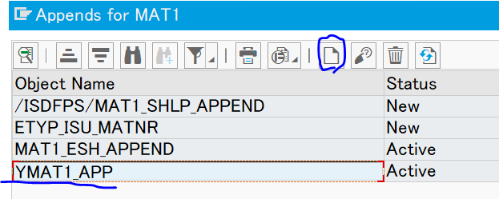Now we know how it works, let's add our custom search help to MAT1. Go to SE11 and in display MAT1(Do NOT need to change the standard object!) Goto -> Append search help. Click on the white tile and create your own append search help(YMAT1_APP for an example).
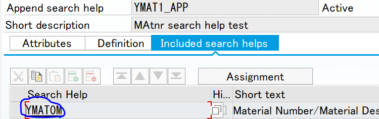The next step is to create our elementary search help. Go to SE11 and create one by coying the standard MAT0M and name it YMAT0M. Change selection method to MARA and set Dialog type of your choice. Save and activate it. Go back to YMAT1_APP and include YMAT0M and click assignment button to assign parameters. Save and activate.
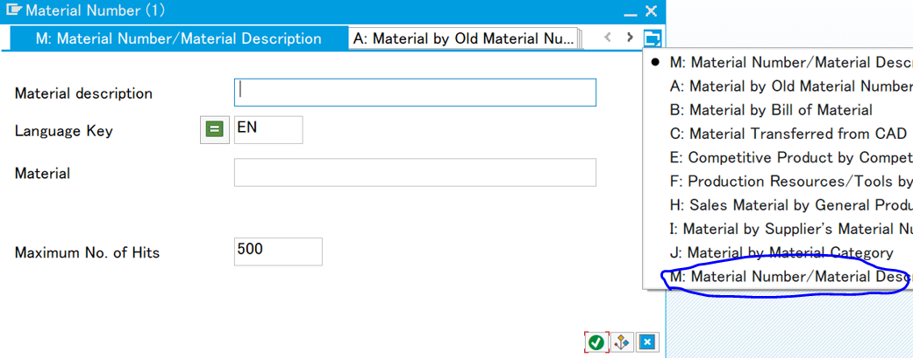Let's try if the custom search help is working. Go to MM03 and use F4. Hmm..our custom search help looks insignificantly small... This is because the standard elementary search help attached to MAT1 is still showing.
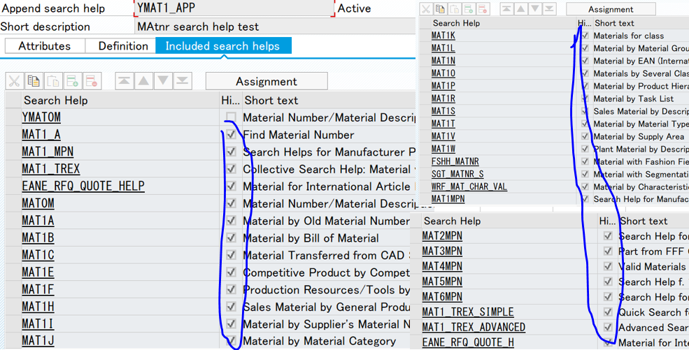 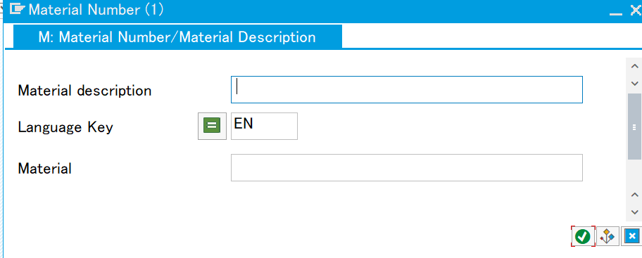I struggled here because I cannot delete those standard search help from MAT1 since that will be modifying the standard object. Through pain staking effor, I manage to find a way. Set all the standard elementary search help attached to MAT1 to our YMAT1_APP. Then check all their hide buttons except my YMAT0M. By using hide button, the standard help will no longer appear on the custom search help. Go to MM03 and click F4 agian. Voila.
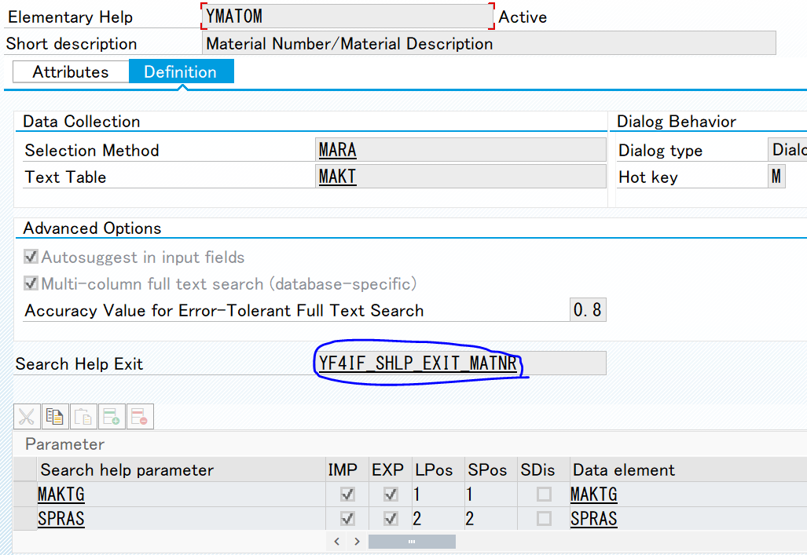Replacing standard search help with custom search help was succcessful. The last step is to implement authority check in YMAT0M. To do that first create function group and function module and set it in search help exit of YMAT0M. I created function module YF4IF_SHLP_EXIT_MATNR. I reccomend copying from search help exit template F4IF_SHLP_EXIT_EXAMPLE to create the function module. You can find the source code at the bottom of the page
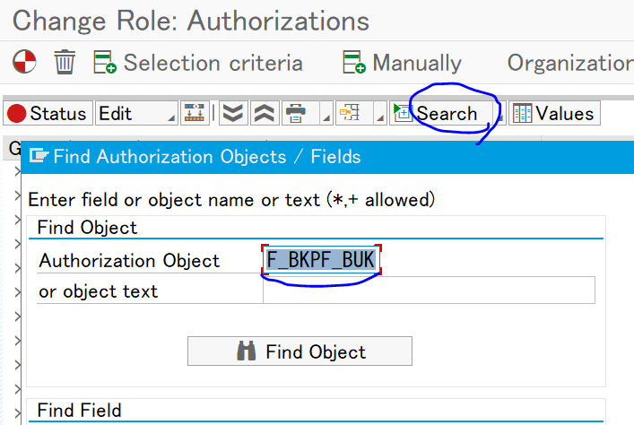 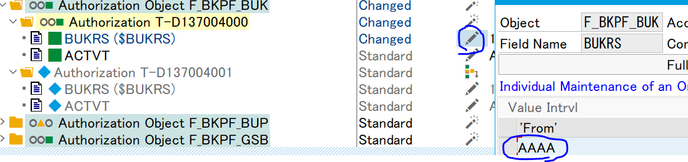To test the authority check, first change the user's authority profile from SU01->Roles->Double click the target role->Jump to PFCG->Switch to change mode-> authorization tab->Change authorization data. It will show all the authority objects attached to the role. Use search button to search for company code auth object F_BKPF_BUK. Change the allowed value to AAAA. Save and activate the profile. Go to MM03 and display search help again. You can see the materials displayed are all under company code AAAA
Implement the below code inside the method.
FUNCTION YF4IF_SHLP_EXIT_MATNR.
*"----------------------------------------------------------------------
*"*"Local Interface:
*" TABLES
*" SHLP_TAB TYPE SHLP_DESCT
*" RECORD_TAB STRUCTURE SEAHLPRES
*" CHANGING
*" VALUE(SHLP) TYPE SHLP_DESCR
*" VALUE(CALLCONTROL) LIKE DDSHF4CTRL STRUCTURE DDSHF4CTRL
*"----------------------------------------------------------------------
TYPES:
BEGIN OF TYP_W_MATNR,
MAKTG TYPE MAKT-MAKTX,
SPRAS TYPE MAKT-SPRAS,
MATNR TYPE MARC-MATNR,
END OF TYP_W_MATNR.
DATA:LR_IT_BUKRS TYPE ZAMCMTD_R_BUKRS,
LR_IT_MATNR TYPE RANGE OF MATNR,
LR_IT_MAKTG TYPE RANGE OF MAKTX,
LR_IT_SPRAS TYPE RANGE OF SPRAS,
LIT_MATNR TYPE STANDARD TABLE OF TYP_W_MATNR.
IF CALLCONTROL-STEP = 'SELECT'.
"Get all company code with authority
"----Write your own logic to get the company code with auth.
"----Store the company code into range table LR_IT_BUKRS.
"
"----
IF SY-SUBRC = 0.
"Create search condition for material
LR_IT_MATNR = VALUE #( FOR LW_SELOPT IN SHLP-SELOPT
WHERE ( SHLPFIELD = 'MATNR' )
( SIGN = LW_SELOPT-SIGN
OPTION = LW_SELOPT-OPTION
LOW = LW_SELOPT-LOW
HIGH = LW_SELOPT-HIGH
) ).
"Create search condition for material text
LR_IT_MAKTG = VALUE #( FOR LW_SELOPT IN SHLP-SELOPT
WHERE ( SHLPFIELD = 'MAKTG' )
( SIGN = LW_SELOPT-SIGN
OPTION = LW_SELOPT-OPTION
LOW = LW_SELOPT-LOW
HIGH = LW_SELOPT-HIGH
) ).
"Create search condition for language
LR_IT_SPRAS = VALUE #( FOR LW_SELOPT IN SHLP-SELOPT
WHERE ( SHLPFIELD = 'SPRAS' )
( SIGN = LW_SELOPT-SIGN
OPTION = LW_SELOPT-OPTION
LOW = LW_SELOPT-LOW
HIGH = LW_SELOPT-HIGH
) ).
"Get material fields that are displayed on Search Help.
SELECT MAKT~MAKTX AS MAKTG,
MAKT~SPRAS AS SPRAS,
MARC~MATNR AS MATNR
FROM T001
INNER JOIN T001K
ON T001K~BUKRS = T001~BUKRS
INNER JOIN T001W
ON T001W~BWKEY = T001K~BWKEY
INNER JOIN MARC
ON MARC~WERKS = T001W~WERKS
INNER JOIN MAKT
ON MAKT~MATNR = MARC~MATNR
INTO TABLE @LIT_MATNR
WHERE T001~BUKRS IN @LR_IT_BUKRS
AND MARC~MATNR IN @LR_IT_MATNR
AND MAKT~MAKTX IN @LR_IT_MAKTG
AND MAKT~SPRAS IN @LR_IT_SPRAS.
IF SY-SUBRC = 0.
"delete duplicates
SORT LIT_MATNR
BY MATNR.
DELETE ADJACENT DUPLICATES FROM LIT_MATNR
COMPARING
MATNR.
ENDIF.
ENDIF.
"loop each search help tab
LOOP AT SHLP_TAB[] ASSIGNING FIELD-SYMBOL().
"loop each fields on the search help tab
LOOP AT -FIELDDESCR ASSIGNING FIELD-SYMBOL().
"Populate RECORD_TAB[] with value
CALL FUNCTION 'F4UT_PARAMETER_RESULTS_PUT'
EXPORTING
PARAMETER = -FIELDNAME
FIELDNAME = CONV DFIES-LFIELDNAME( -FIELDNAME )
TABLES
SHLP_TAB = SHLP_TAB[]
RECORD_TAB = RECORD_TAB[]
SOURCE_TAB = LIT_MATNR
CHANGING
SHLP = SHLP
CALLCONTROL = CALLCONTROL
EXCEPTIONS
PARAMETER_UNKNOWN = 1
OTHERS = 2.
ENDLOOP.
ENDLOOP.
IF SY-SUBRC = 0.
"Do not wait for DISP step but rather change SELECT to DISP so it will display SH right away.
CALLCONTROL-STEP = 'DISP'.
ENDIF.
ENDIF.
ENDFUNCTION.